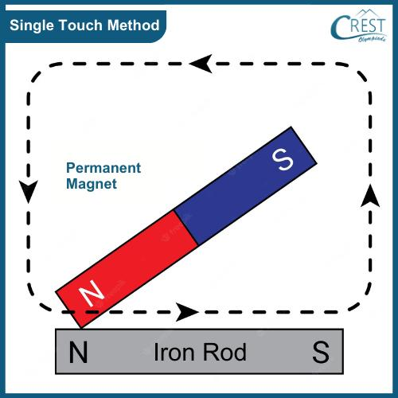
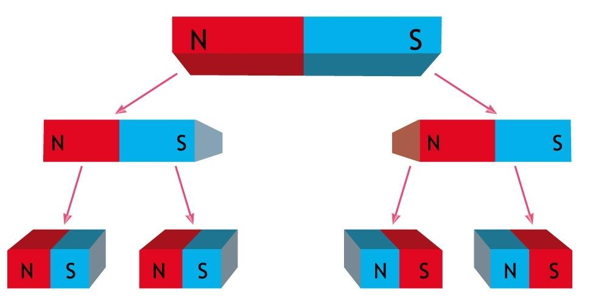
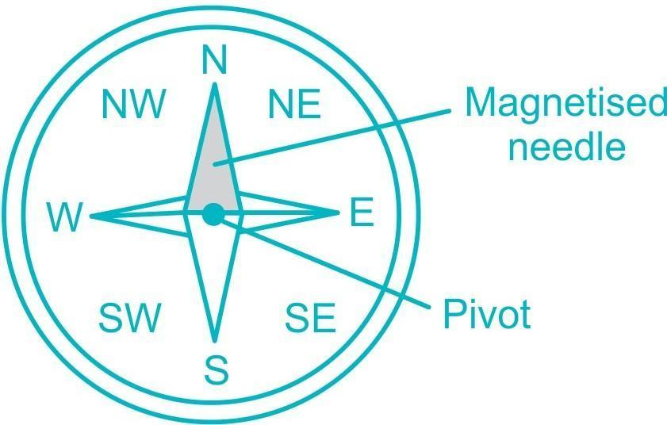
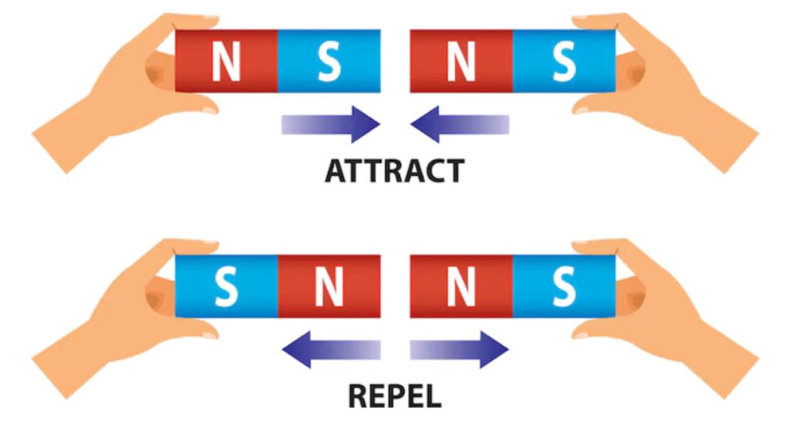
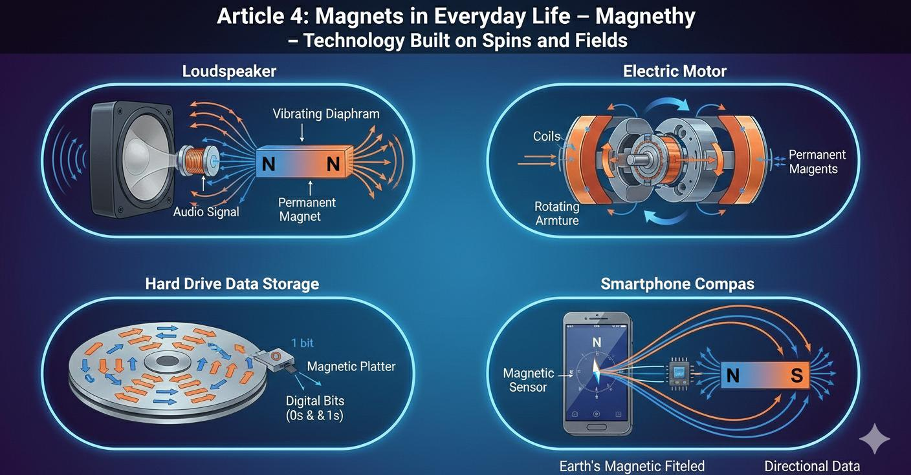

📘 Chapter 04: Exploring Magnets – Questions and Answers
1. Choose the Correct Answer
Question 1. Which of the following is/are properties of magnets?
- The poles of a magnet always exist in pairs.
- A magnet has two poles.
- Like poles repel and unlike poles attract each other.
- All of these.
Answer: (d) All of these.
Question 2. When a magnet is broken into four pieces, how many poles are obtained in all?
- Two
- Four
- Six
- Eight
Answer: (d) Eight. Each piece becomes a smaller magnet with two poles.
Question 3. Which of the following will be attracted by a magnet?
- Wooden spoon
- Piece of chalk
- Iron key
- Eraser
Answer: (c) Iron key.
Question 4. Which of the following statements is correct about a magnetic compass?
- It points towards the geographic south.
- The needle of the compass is painted red entirely.
- It helps travellers in finding directions.
- None of these.
Answer: (c) It helps travellers in finding directions.
Question 5. Which of the following is a magnetic substance?
- Copper
- Sulphur
- Stainless steel
- Rubber
Answer: (c) Stainless steel.
2. Write True or False. Also, Correct the Incorrect Statements.
Question 1. Magnets were called lodestone as they helped people in finding distances.
Answer: False. Natural magnets were called lodestones because they helped people find directions.
Question 2. The earth's geographical north is the south pole of the magnet.
Answer: True. The Earth's geographic North Pole behaves like a magnetic south pole.
Question 3. We can keep magnets near the computer screen.
Answer: False. Magnets should not be kept near devices that can be affected by magnetic fields.
Question 4. A freely suspended magnet comes to rest in the east-west direction.
Answer: False. A freely suspended magnet comes to rest in the north-south direction.
Question 5. Magnets must not be hammered or heated.
Answer: True.
3. Match the Columns
| Column A | Column B | Correct Match |
|---|---|---|
| 1. Steel and metals | (c) Magnetic substances | 1 – (c) |
| 2. North-north pole | (a) Repulsion | 2 – (a) |
| 3. A giant magnet | (d) Earth | 3 – (d) |
| 4. Maximum magnetic strength | (e) Poles | 4 – (e) |
| 5. Magnetic strip | (b) ATM card | 5 – (b) |
4. Fill in the Blanks
- The north pole of a magnet attracts the south pole of another magnet.
- A magnet attracts objects made of magnetic materials.
- The name magnetite was kept after either Magnesia or Magnes.
- Magnets are made of iron or steel.
- A piece of iron is kept across the poles of a horseshoe magnet to keep it safe.
5. Give Two Examples of Each
Question 1. Different shapes of artificial magnets.
Answer:
- Bar magnet
- Horseshoe magnet
Question 2. Magnetic materials.
Answer:
- Iron
- Nickel
Question 3. Devices prone to damage if exposed to a magnet.
Answer:
- Computer
- Television
Question 4. Devices that have magnets to generate power.
Answer:
- Electric motor
- Electric generator
6. Define the Following Terms
Question 1. What is magnetite?
Answer: Magnetite is a naturally occurring magnetic mineral. It is also known as lodestone.
Question 2. What is magnetism?
Answer: Magnetism is the property of a magnet by which it attracts magnetic materials such as iron.
Question 3. What is magnetic induction?
Answer: Magnetic induction is the process by which a magnetic material becomes temporarily magnetised when placed near a magnet.
Question 4. What is a temporary magnet?
Answer: A temporary magnet is a magnet that loses most or all of its magnetism when the magnetising force is removed.
Question 5. What is a magnetic keeper?
Answer: A magnetic keeper is a piece of soft iron placed across the poles of a magnet to protect it from losing its magnetism.
7. Answer the Following Questions Briefly
Question 1. What do you mean by artificial magnets?
Answer: Artificial magnets are magnets made by humans from magnetic materials such as iron and steel. They are made in different shapes, such as bar magnets and horseshoe magnets.
Question 2. Name two non-magnetic substances.
Answer:
- Wood
- Rubber
Question 3. How many poles does a horseshoe-shaped magnet have?
Answer: A horseshoe-shaped magnet has two poles: a north pole and a south pole.
Question 4. How should two bar magnets be stored?
Answer: Two bar magnets should be stored side by side with unlike poles facing each other. A wooden piece should be placed between them, and soft iron keepers should be placed across their ends.
Question 5. How can you distinguish between steel and stainless steel using a magnet?
Answer: Bring a magnet near both materials. Steel is attracted by a magnet. Some types of stainless steel are also attracted, but many common stainless steel types are not. Therefore, a magnet can help identify magnetic stainless steel, but it cannot distinguish all types of steel from stainless steel.
8. Answer the Following Questions in Detail
Question 1. What is the process of magnetising a substance known as? Explain how it can be done. Also, mention how you will test if the substance is magnetised or not.
Answer: The process of making a magnetic substance into a magnet is called magnetisation.
Method of Magnetisation:
- Take an iron or steel bar.
- Take a bar magnet.
- Place one pole of the magnet at one end of the iron or steel bar.
- Rub the magnet along the length of the bar in the same direction.
- Lift the magnet after reaching the other end.
- Repeat this process several times in the same direction.
The iron or steel bar may become magnetised.
How to Test Whether the Substance Is Magnetised:
- Bring some iron pins or paper clips near the bar.
- If they are attracted towards the bar, it has become magnetised.

Question 2. Explain what would happen when a bar magnet is broken into four pieces.
Answer: When a bar magnet is broken into four pieces, each piece becomes a smaller magnet.
- Every piece has its own north pole and south pole.
- No piece has only a north pole or only a south pole.
- Each small magnet has two poles.
- Therefore, four pieces have a total of eight poles.
This shows that the north and south poles of a magnet always exist in pairs.

Question 3. What is a magnetic compass? Explain its structure and how we can find directions using it.
Answer: A magnetic compass is an instrument used to find directions. It contains a small magnetic needle that can rotate freely.
Structure of a Magnetic Compass:
- It has a small magnetic needle.
- The needle is placed on a pointed support so that it can rotate freely.
- The needle is enclosed in a small box with a transparent cover.
- The directions are marked on the compass.
How to Find Directions Using a Compass:
- Place the compass on a flat surface.
- Allow the magnetic needle to come to rest.
- The north-seeking end of the needle points towards the north.
- The opposite end points towards the south.
- Once north and south are known, east and west can also be identified.
A magnetic compass is useful for travellers, sailors and hikers.

Question 4. With the help of an activity, show that like poles repel and unlike poles attract each other.
Answer: We can show the attraction and repulsion between magnetic poles with the help of two bar magnets.
Materials Required:
- Two bar magnets
- A thread
- A stand
Procedure:
- Suspend one bar magnet freely with the help of a thread.
- Allow it to come to rest.
- Bring the north pole of the second magnet near the north pole of the suspended magnet.
- Observe what happens.
- Now bring the south pole of the second magnet near the north pole of the suspended magnet.
- Observe again.
Observation:
- When two north poles are brought near each other, they repel.
- When a north pole and a south pole are brought near each other, they attract.
Conclusion: Like poles repel each other, while unlike poles attract each other.

Question 5. List any five uses of magnets in our daily life.
Answer: Magnets are useful in many ways in our daily life. Five uses are:
- Compass: A magnet is used in a compass to find directions.
- Refrigerator Door: Magnets help keep refrigerator doors closed.
- Electric Motors: Magnets help electric motors work.
- Speakers: Magnets are used in speakers to produce sound.
- ATM Cards: A magnetic strip on some cards stores information.
Other uses include magnetic toys, magnetic cranes and magnetic locks.

9. Quick Revision – Important Points
- A magnet has two poles: north and south.
- Magnetic poles always exist in pairs.
- Like poles repel each other.
- Unlike poles attract each other.
- Iron, nickel and cobalt are magnetic materials.
- Wood, rubber and plastic are non-magnetic materials.
- Magnetite is a natural magnetic mineral.
- Artificial magnets are made by humans.
- A freely suspended magnet rests in the north-south direction.
- A magnetic compass helps us find directions.
- The magnetic strength of a magnet is greatest at its poles.
- Breaking a magnet produces smaller magnets, each with two poles.
- Magnets should not be hammered or heated.
- A magnetic keeper helps protect a magnet.
- Magnets are used in electric motors, speakers and many other devices.
10. Chapter Summary
Magnets are objects that attract certain materials, such as iron. Every magnet has two poles: north and south. Like poles repel each other, while unlike poles attract each other. Magnets can be natural or artificial. A freely suspended magnet points in the north-south direction. A magnetic compass helps us find directions. Magnets are used in many devices in our daily life. We should store magnets carefully and protect them from heating and hammering.
Message of the Chapter
Magnets are useful in science, technology and everyday life. By understanding their properties, we can use them safely and effectively.
MCQ Quiz
अध्याय के वस्तुनिष्ठ प्रश्नों का अभ्यास करें।
MCQ Quiz शुरू करेंPDF Notes
इस अध्याय के नोट्स PDF में पढ़ें या डाउनलोड करें।
📄 View PDF ⬇️ Download PDF